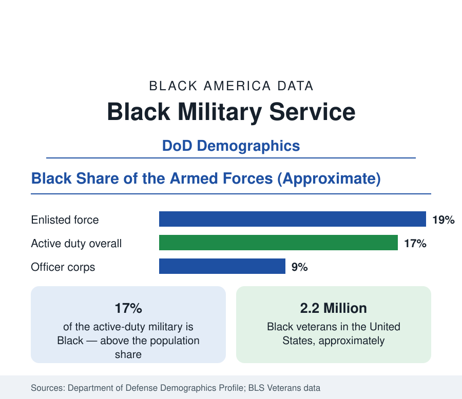

Black Employment
Black Americans in the Military: Service and the Veteran Workforce
Black Americans form about 17 percent of the active-duty force — and Black women the most overrepresented group in uniform. The Defense Department data.

Black Americans serve in the United States military at rates above their share of the population: about 17 percent of the active-duty force is Black in the Defense Department's demographic profile, with the share among enlisted personnel near 19 percent. The military is, by the employment data of this reference, the most completely integrated large institution in American life — the first major employer to desegregate by order, the employer whose pay grades are published and race-blind by construction — and its Black workforce data show both the power and the limits of that structure. This article reports the service and veteran data.
The Enlisted Force and Black Women
The enlisted ranks are where Black service concentrates, and within them one demographic stands out in the entire federal personnel record: Black women. They form roughly a third of the women in the enlisted force — the most overrepresented group in uniform relative to population of any in the DoD data — drawn by the institution's package of equal pay by grade, housing, health care, and education benefits that the civilian data of this reference show distributed so unevenly. The Army records the highest Black share of the services, in the low-to-mid twenties percent; the Navy and Air Force run in the high teens; the Marine Corps the lowest, in the low teens. Occupational distribution within the force mirrors the civilian pattern in part — Black service members concentrate in administrative, logistics, and support specialties at rates above their share of combat arms, a distribution the promotion data downstream reflect.
The Officer Gap
The commissioned officer corps records the institution's internal gap: Black officers form roughly 8 to 9 percent of the officer corps against 17 percent of the force, and the share thins at each ascending rank — a few percent of generals and admirals in the recent counts, though the most recent years have recorded historic firsts at the very top of several services. The pipeline data explain the structure: commissions run through the service academies and ROTC (where the HBCUs — the Army's program at schools like Prairie View, Hampton, and North Carolina A&T among the largest producers of Black officers — carry a disproportionate share), and the branch-assignment and evaluation systems compound small differences across twenty-year careers in the personnel research. The military's own studies treat the gap as a retention and development problem measured grade by grade.
Veterans: The Workforce After Service
About 2.2 million Black veterans live in the United States — roughly 12 percent of the veteran population. The Bureau of Labor Statistics' veteran employment data record Black veterans' unemployment running above the overall veteran rate (which itself runs below the nonveteran rate), with Black women veterans' rate the highest of the veteran subgroups in several recent years — the civilian labor market's patterns reasserting themselves after the military's structured equality ends. The compensating institutions are substantial: VA health care enrollment, disability compensation (where the claims-approval data have documented racial differences that the VA's own equity reviews now track), the GI Bill's education benefits — Black veterans use education benefits at high rates, with the for-profit enrollment pattern of the education data appearing here as well — and federal hiring preferences that feed the public-sector pipeline of this section.
What the Military Data Demonstrate
Read as an employment experiment, the military is this reference's control case: an employer with transparent pay, standardized promotion criteria, universal health care, and housing — within which Black outcomes (retention, mid-grade promotion, retirement at twenty years with pension) approach parity more closely than in any comparable civilian dataset, while gaps persist precisely where discretion enters: branch assignment, evaluations, and the officer pipeline. The institution's data thus serve the whole employment section as evidence about mechanisms: they show which disparities survive the removal of pay secrecy and benefit gaps, and which do not.
Reading the Service Data
Seventeen percent of the force, a fifth of the enlisted ranks, a third of its women, a twelfth of its officers, 2.2 million veterans: the military numbers are simultaneously the strongest representation figures in this reference and a map of where representation stops. Both halves belong in the record, and the DoD's annual demographic profile — the most complete personnel accounting any American institution publishes — is this article's standing source.
More in Black Employment
The Black Unemployment Rate: The Two-to-One Pattern
Black unemployment runs at roughly twice the White rate — 5.5 percent against 3.3 percent in annual averages — a ratio stable across five decades of federal data. How it is measured and why it persists.
Black Median Weekly Earnings: The 80-Cent Ratio
Black full-time workers earn a median of about $900 a week — roughly 80 cents for every dollar White workers earn. The BLS earnings data by group, gender, and occupation.
Black Labor Force Participation: Working at National Rates
Black labor force participation runs at roughly the national rate — and Black women participate at higher rates than White women. The BLS participation data.
Source: U.S. Department of Defense, Demographics Profile of the Military Community; U.S. Bureau of Labor Statistics, Employment Situation of Veterans; Department of Veterans Affairs.